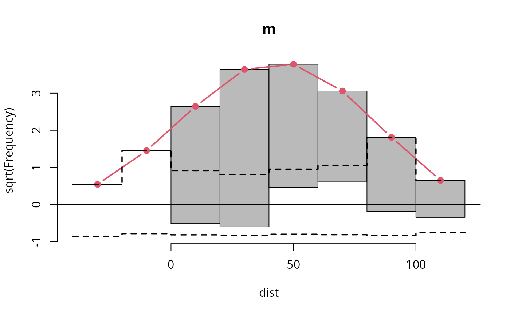
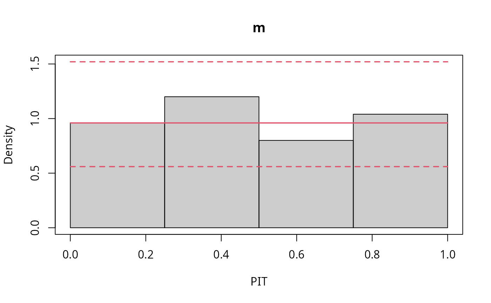

topmodels.RmdAs a consequence of the growing importance of probabilistic predictions in various application fields due to a necessary functional risk management and strategy, there is an increasing demand for appropriate probabilistic model evaluation. Besides proper probabilistic scores (Gneiting and Raftery 2007), which evaluate not only the expectation but the entire predictive distribution, graphical assessment methods are particularly advantageous to diagnose possible model misspecification problems.
Probabilistic predictions are often based on distributional regression models, whereby the computation of predictive distributions, probabilities, and quantiles is generally dependent on the R package being used. Therefore, routines to graphically evaluate probabilistic models are not always available and if so then only for specific types of models and distributions provided by the corresponding package. An easy to use unified infrastructure to graphical assess and compare different probabilistic model types does not yet exist.
The topmodels packages is designed to provide such an unifiying infrastructure to gain predictions of probabilities, densities, scores, and Hessian values for probabilistic models. The unifying prediction method offers the user numerous graphical evaluation tools, such as rootograms (Kleiber and Zeileis 2016), PIT histograms (Gneiting, Balabdaoui, and Raftery 2007), reliagrams (reliability diagrams, Wilks 2011), randomized quantile Q-Q plots (Dunn and Smyth 1996), and worm plots (Buuren and Fredriks 2001).
To be able to use the object-oriented framework of topmodels,
solely a procast() method must exist for the model class of
interest. Currently the package provides generic procast
methods for the model classes lm, glm, crch
(Messner, Mayr, and Zeileis 2016), and disttree
(Schlosser et al. 2019).
For the package topmodels so far only a development version is available, which is hosted on R-Forge at https://r-forge.r-project.org/projects/topmodels/pkg/topmodels/ in a Subversion (SVN) repository. The package can be installed via
install.packages("topmodels", repos="http://R-Forge.R-project.org")or via
remotes::install_svn("svn://r-forge.r-project.org/svnroot/topmodels/pkg/topmodels")where a specific revision can be installed by setting the optional
argument revision.
The package topmodels
provides various routines to easily graphically assess and compare
different probabilistic models and model types using
ggplot2 (Wickham 2016) and
base R graphics:
rootogram(m)
pithist(m)
qqrplot(m)
#```{r example-reliagram}
# FIXME: (ML) Produces error due to eval (something w/ enivornments not properly set?!)
#reliagram(m)
#````
wormplot(m)